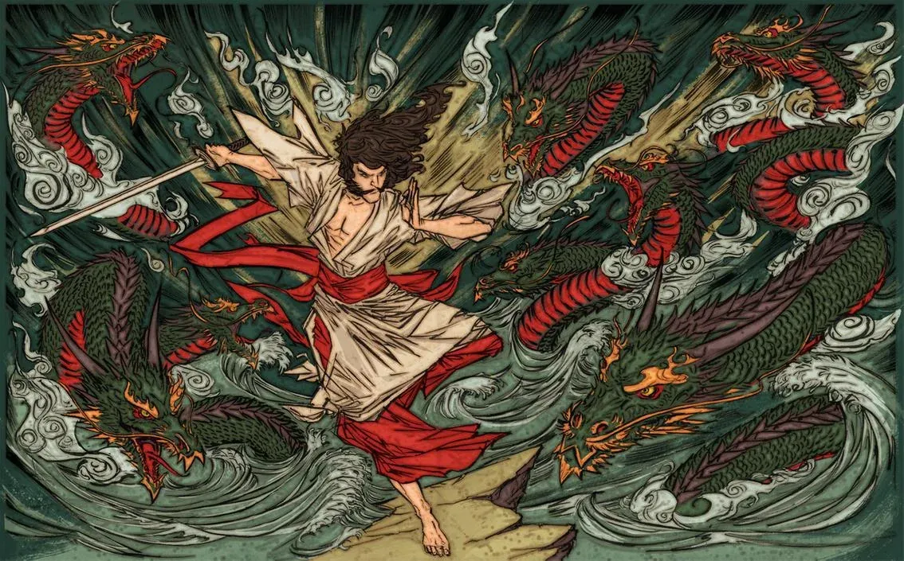

Mitología japonesa
Susanoo
Dios de la tormenta y el mar
Susanoo (también escrito Susano-o o Susano'o) es uno de los dioses más importantes y fascinantes de la mitología japonesa. Es conocido por su carácter turbulento, impredecible y poderoso, y protagoniza varias historias del Kojiki y el Nihon Shoki, los textos más antiguos que recopilan la mitología y la historia de Japón.
須佐之男命 スサノオ

Orígenes y familia
Susanoo es el dios del mar y las tormentas, hijo de Izanagi e Izanami, los dioses creadores del mundo según la mitología japonesa. Es hermano de Amaterasu, la diosa del sol, y de Tsukuyomi, el dios de la luna.
Según el Kojiki, Susanoo nació cuando Izanagi se purificó después de visitar el inframundo, Yomi, para rescatar a Izanami. Al purificarse, Izanagi dio vida a tres dioses: Amaterasu, Tsukuyomi y Susanoo.
Izanagi e IzanamiDioses creadores
- Amaterasu Diosa del sol
- Tsukuyomi Dios de la luna
- Susanoo Dios de la tormenta y el mar
Características y atributos
Susanoo es conocido por su carácter violento y destructivo, y por su capacidad para provocar tormentas y desastres naturales. Según el Kojiki, fue desterrado por su comportamiento incontrolable y tuvo que luchar contra un dragón de ocho cabezas para demostrar su valía.
Después de derrotar al dragón, Susanoo se convirtió en el dios del mar y las tormentas, y se le asoció con la fertilidad, la agricultura y la protección de los cosechadores de arroz.